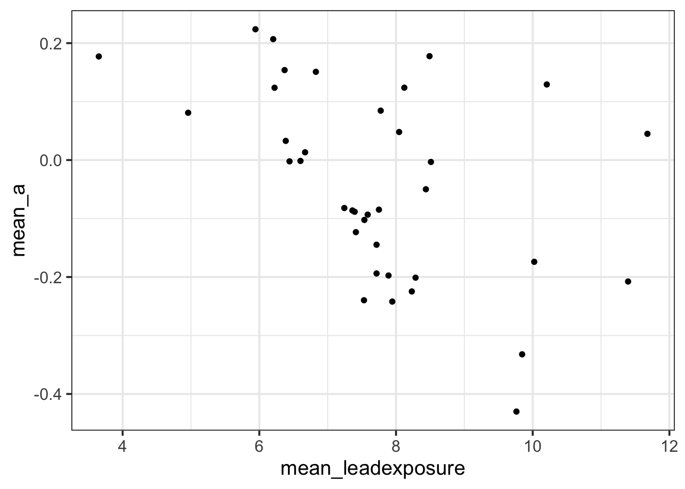
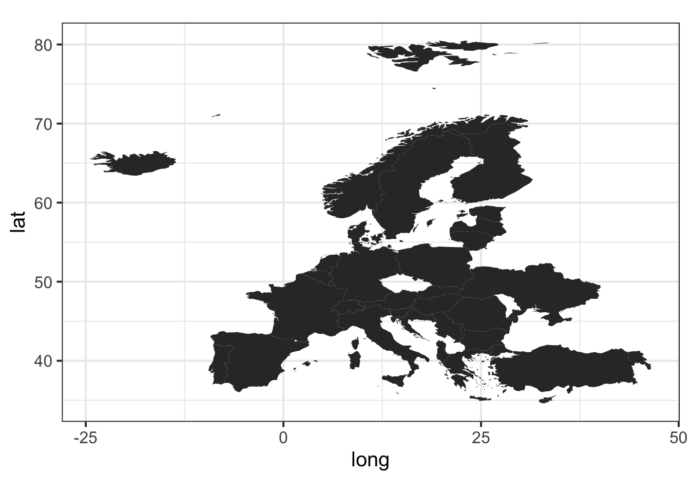
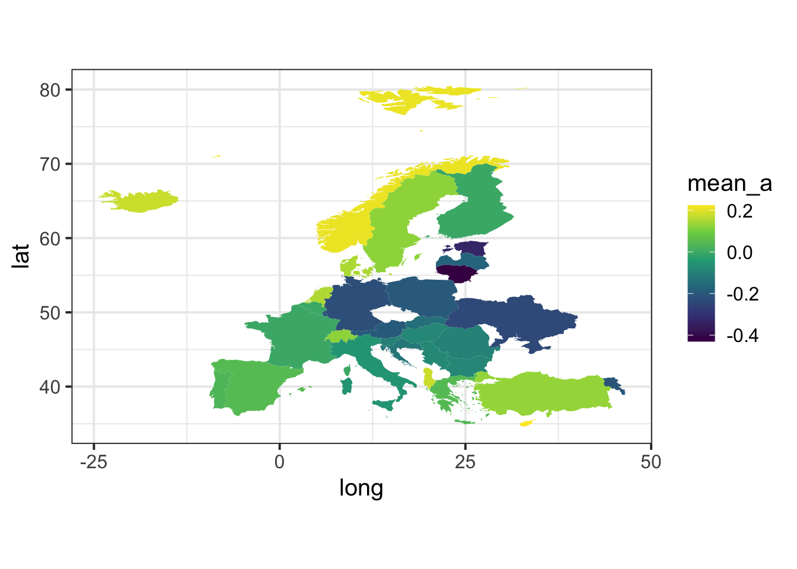

More and more, epidemiologists are uncovering the alarmingly detrimental effects of environmental pollution for human health and well-being. As has long been known, childhood lead exposure has particularly damaging and lifelong consequences, with even low levels stunting intellectual development. The ancient Romans famously lined their aqueducts with lead, which some have speculated may have hastened the empire’s downfall by contaminating their drinking water (Nriagu,1983).
More recently, atmospheric lead exposure from leaded gasoline was substantial across the developed world. Fortunately, in the U.S. the Clean Air Act of 1970 began transitioning away from the use of leaded gasoline, though it wasn’t outright banned in the U.S. until 1996. Some epidemiologists and economists believe that reduced lead exposure (especially during childhood) is at least partly responsible for reductions in crime since the 80s and 90s (Higney et al., 2022).
However, the benefits of environmental reforms are often not felt evenly. Leaded gasoline was used in the developing world long after it was banned in most Western nations—the last stockpiles were only finally used up by Algeria in July of 2021 (NPR)! And even in the U.S., many communities are still exposed to too much lead and other environmental pollutants, especially communities of color like Flint, MI.
The idea that an environmental pollutant could harm health is worrying. The idea that it could stunt one’s intellect, or even impair one’s decision-making is perhaps unsettling on another level. But could lead exposure do something even deeper than all that—could it change your personality?
In this lab we’ll explore data from a recent paper by Schwaba and colleagues (2022) published in the Proceedings of the National Academy of Sciences that explores this question.
LEARNING OBJECTIVES
RECOMMENDED READING
“Lead: America’s Real Criminal Element” (Mother Jones) by Kevin Drum, a leading proponent of the “lead-crime hypothesis” (also recommended, its wikipedia entry).
Go to the course RStudio Cloud Workspace and locate the folder for the lab assignment, which should be named Assignments: Module 4.
First, open the R Markdown document mod-04-lab.Rmd and Knit it.
Make sure it compiles without errors and you can preview the output within the Viewer Pane.
The output should also be automatically saved as an .html file with the same name.
Before we introduce the data, let’s warm up with a simple exercise.
We’ll use the tidyverse package for much of the data wrangling.
This package is already installed for you.
You can load it by running the following in your Console:
We’re going to work with two datasets in this lab, both of which can be found as CSV (comma-separated values) files in the data folder of your repository.
You can read the first of these in using the following, we’ll call it survey.
The variable descriptions are as follows:
| Variable Name | Description |
|---|---|
Country |
Name of country |
mean_e |
Avg. Extraversion score |
sd_e |
Std. Dev. of Extraversion |
mean_a |
Avg. Agreeableness score |
sd_a |
Std. Dev. of Extraversion |
mean_c |
Avg. Conscientiousness score |
sd_c |
Std. Dev. of Conscientiousness |
mean_n |
Avg. Neuroticism score |
sd_n |
Std. Dev. of Neuroticism |
mean_o |
Avg. Openness score |
sd_o |
Std. Dev. of Openness |
mean_age |
Avg. age of respondents |
n |
Number of respondents |
The second dataset we will use is some country-level statistics for all European Union countries. You can read in the second dataset with the following, calling it eudata:
eudata variables. Look at the names of the variables in the eudata data. What do you think the data in each of these variables represents?survey data to see if it contains responses from all EU countries. Write the code to see which countries are missing in the survey dataset as compared to the eudata dataset?To help with this exercise, you could print out the country variable in each by indexing the data frames with the $ operator. Then, squint at these two lists and see if you can find any differences.
## [1] "Albania" "Armenia" "Austria"
## [4] "Bosnia & Herzegovina" "Belgium" "Bulgaria"
## [7] "Switzerland" "Cyprus" "Czechia"
## [10] "Germany" "Denmark" "Estonia"
## [13] "Spain" "Finland" "France"
## [16] "United Kingdom" "Greece" "Croatia"
## [19] "Hungary" "Iceland" "Italy"
## [22] "Liechtenstein" "Lithuania" "Luxembourg"
## [25] "Latvia" "Malta" "Netherlands"
## [28] "Norway" "Poland" "Portugal"
## [31] "Romania" "Serbia" "Sweden"
## [34] "Slovenia" "Slovakia" "Turkey"
## [37] "Ukraine"## [1] "Albania" "Armenia" "Austria"
## [4] "Bosnia and Herzegovina" "Belgium" "Bulgaria"
## [7] "Switzerland" "Cyprus" "Czech Republic"
## [10] "Germany" "Denmark" "Estonia"
## [13] "Spain" "Finland" "France"
## [16] "United Kingdom" "Greece" "Croatia"
## [19] "Hungary" "Iceland" "Italy"
## [22] "Liechtenstein" "Lithuania" "Luxembourg"
## [25] "Latvia" "Malta" "Netherlands"
## [28] "Norway" "Poland" "Portugal"
## [31] "Romania" "Serbia" "Sweden"
## [34] "Slovenia" "Slovakia" "Turkey"
## [37] "Ukraine"If you’re going cross-eyed, there is a better way. In fact, it’s the way I want you to use.
Write one or two lines of code using the %in% operator to see which of the countries from one dataset are NOT in the list of countries from the other dataset.
HINT: You should get back two countries. You will also see that it’s not so much these two countries are missing from each data set, but they are spelled differently across the two datasets.
To investigate whether lead exposure is related to personality, we need to join the two data frames into one.
But, we’re going to have problems with the Country variable in each dataset because of those two countries that are misspelled.
This is how our problematic countries are spelled in the eudata dataset:
## [1] "Bosnia and Herzegovina" "Czech Republic"And this is how they are spelled in the survey dataset:
## [1] "Bosnia & Herzegovina" "Czechia"NOTE: The code above uses something called a “regular expression” in the str_detect function to check where the values of Country match either “Czech” or “Bosnia”. Regular expressions are powerful tools for working with text, though we will keep things simple in this course.
case_when function to recode the Country variable in the eudata data frame to match how they are written in the survey data.Country variable. Will it make a difference which kind of join you perform?In this paper it is argued that lead exposure is associated with lower agreeableness, so that people exposed to more lead are less agreeable.
This is what your code should produce:

You have surely heard that “correlation is not causation” — so we can’t say whether there is any causal relationship between agreeableness and lead exposure. One reason is that an association between two variables could be confounded—e.g. there might be some other third variable that affects them both and that produces the association. We’ll talk about this more later in the course, but for now let’s briefly explore some possibilities by looking at another kind of visualization: a map.
One thing we might think could influence personality is geography. Without playing too much into broad stereotypes, there are many historical and cultural differences between people in Eastern Europe versus Western Europe. Maybe people in the East or West are more or less agreeable? Maybe they also happen to have more or less lead exposure?
The ggplot2 package includes a function called map_data() that loads data for plotting maps of different parts of the world. The code below loads data with latitude (lat) and longitude (long) points marking the boundaries of all the different nations of the world and then turns that data.frame object into a tibble.
## # A tibble: 99,338 × 6
## long lat group order region subregion
## <dbl> <dbl> <dbl> <int> <chr> <chr>
## 1 -69.9 12.5 1 1 Aruba <NA>
## 2 -69.9 12.4 1 2 Aruba <NA>
## 3 -69.9 12.4 1 3 Aruba <NA>
## 4 -70.0 12.5 1 4 Aruba <NA>
## 5 -70.1 12.5 1 5 Aruba <NA>
## 6 -70.1 12.6 1 6 Aruba <NA>
## 7 -70.0 12.6 1 7 Aruba <NA>
## 8 -70.0 12.6 1 8 Aruba <NA>
## 9 -69.9 12.5 1 9 Aruba <NA>
## 10 -69.9 12.5 1 10 Aruba <NA>
## # ℹ 99,328 more rowsIf we join this with our combined data, we will be ready to plot a map of the variable we’re interested in.
map_data("world") with the combined data to create a new dataset. Make sure to do so in a way that only keeps the countries we have data for in the combined dataset. You can assign this new dataset to a variable just called d.Hint: Pay attention to the fact I wrote you want to prioritize the countries in the combined dataset. The map_data("world") dataset has way more countries than we need. So which join function do you want to use? Next, you need to specify in the join function which variable in each dataset has the countries we want to join on (using the by = c(VAR1=VAR2) argument).
Short variable names like d can be useful for “temporary” data that won’t be used for more than one thing. We’re only going to be using d to make our map plots, but we wouldn’t use it for any other kinds of analysis, so the short and generically non-descript name can be OK here.
Now we’re ready to make our map to explore the possibility of geographic differences. The code below creates the basic map.


Hint: To generate this, use the fill option in the aes(), making fill equal to the agreeableness variable. And then, somewhere in your code, you will use the viridis color scheme to make it look nicer with scale_fill_viridis_c()
Now do what you just did, but now plot lead exposure by country instead of agreeableness.
Write-up: Compare the plots. Do you notice any patterns? Does the geographic explanation of the association between agreeableness and lead exposure seem plausible?
Now go back through your write up to make sure you’ve answered all questions and all of your R chunks are properly labelled.
SUBMITTING YOUR WORK
Once you decide that you’re done with this lab, change the YAML output from html_output to pdf_output. Now knit the document to produce a final PDF file. Upload the PDF as a Canvas assignment.